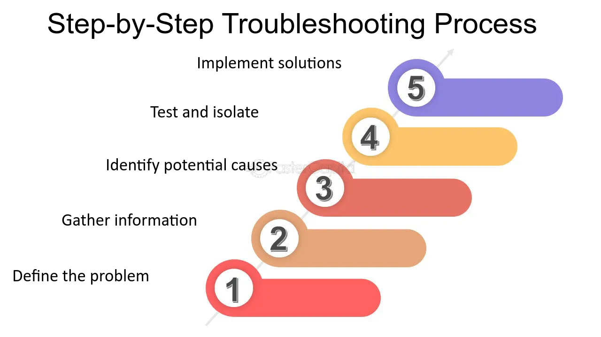

I have a strong interest in repairing technology, including computers, phones, and tablets. This
hands-on experience provides me with a deeper practical understanding of how these devices function.
The process of troubleshooting and finding solutions for technical problems has significantly
improved my ability to think critically and solve challenges efficiently, both in my personal
projects and professional work.
